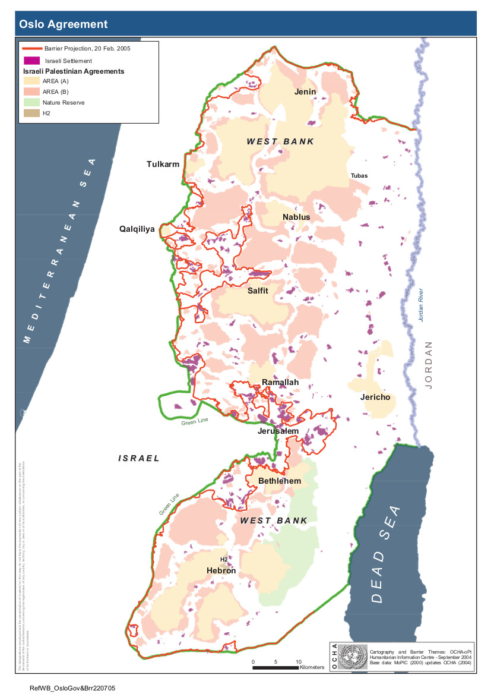

خضعت "جوجل" في آب 2016 إلى مساءلة عالميّة بسبب تمثيلها لفلسطين، وذلك بعد أن أزالت تسميات "الضّفّة العربيّة" و"غزّة" عن خرائطها. كان ردّ "جوجل" بأنّ التسميات أُزيلت بسبب خلل تقنيّ، وأكّدت أنّها لم تسمّي "فلسطين" في خرائطها بالسّابق. علاوة على ذلك، اتّهم بعض منتقدي خرائط "جوجل" أنّها ترسّخ رفض الحكومة الإسرائيليّة الاعتراف بالملكيّة البدويّة لبعض المناطق والأراضي من خلال عدم تسمية بعض القرى البدويّة، وتفضيل طرق المستوطنات الإسرائيليّة غير القانونيّة في خرائطها. تتمتّع "جوجل"، في سياق فيه مواضيع الأرض وملكيّتها هي مواضيع مثيرة للجدل وسياسيّة بطبيعتها إلى حدّ كبير، بقوّة هائلة باعتبارها أكبر مصدر للمعلومات الجغرافيّة الرقميّة في العالم، وبإمكانها أن تصمّم وتشرعن تفسيرات معيّنة للعالم الفيزيائيّ والسياسات التي تقوم عليه. سيبيّن هذا التقرير أنّ حقوق الإنسان تمتد إلى المجال الرقميّ، حيث أنّ الطريقة التي يتم فيها تمثيل العالم الفيزيائيّ في الخرائط عبر الانترنت قد تتعارض مع ممارسة حقوق الإنسان الأساسيّة. يحلّل هذا التقرير سيرورة وضع الخرائط في خرائط "جوجل" بما يتعلّق بالمناطق الفلسطينيّة المحتلّة، وكيف أن هذه السيرورة تساعد في تشكيل رأي عام يخدم مصالح الحكومة الإسرائيليّة، وفي نفس الوقت تتعارض مع التزام "جوجل" لأطر حقوق الإنسان الدوليّة. سنقوم بهذا التحليل بعد تلخيص الوضع الجغرافيّ والسياسيّ لإسرائيل والمناطق الفلسطينيّة المحتلّة، وتحليل القرى الفلسطينيّة وتمثيلها في خرائط "جوجل"، بما في ذلك تطبيق تخطيط الطرق التابع لـ"جوجل" في هذه المناطق. أخيرًا، سنفحص المصطلحات التي يتم استخدامها في تطبيقات خرائط "جوجل" وتخطيط الطرق في مناطق عينيّة، وذلك قبل أن نقدّم الاستنتاجات والتوصيات. تستند المنهجية المستخدمة لكتابة هذا التقرير على المعايير العالميّة لحقوق الإنسان. على الرغم من محاولات لا حصر لها، لم يكن بالإمكان التواصل مع مندوب/ة تطبيق خرائط "جوجل" للتعقيب على هذا الموضوع. وبالرغم من أن عدّة مندوبين من "جوجل" كانوا قد وافقوا على الإجابة عن أسئلة متعلّقة بهذا الموضوع، إلا أنّه في النهاية لم يكن أيّ شخص، من قِبَل "جوجل"، متاحًا للتّعقيب.
سنعرّف في هذا القسم الخطوط العريضة لما يلي: المصطلحات التي يتم استخدامها عند الحديث عن المناطق الفلسطينيّة المحتلّة، التقسيم المناطقيّ وتجزئة فلسطين التّاريخيّة، وتداعيات ذلك على حقوق الإنسان للفلسطينيّين، وتقييد حركة الفلسطينيّين القاطنين في الضّفّة الغربيّة وقطاع غزّة. جغرافيًّا، تقع إسرائيل داخل الخط الأخضر المعترف به عالميًا، ولا يشمل ذلك القدس الشّرقيّة. تتكوّن فلسطين من منطقتين جغرافيّتين منفصلتين، هما غزّة والضّفّة الغربيّة (يشمل ذلك القدس الشّرقيّة التي تم ضمّها لإسرائيل بشكل غير قانونيّ). تم تقسيم الضّفّة الغربيّة أيضًا إلى مناطق A وB وC. تقع المنطقة A رسميًا تحت سيطرة السّلطة الفلسطينيّة، كما تقع المنطقة C تحت الحكم العسكري الإسرائيليّ، أمّا المنطقة B فهي تحت سيطرة أمنيّة إسرائيليّة وإدارة مدنيّة فلسطينيّة. صورة: اتّفاقيّة أوسلو- UNOCHA، 2005 تمّ إنشاء 150 مستوطنة في منطقة C حتى عام 2016، والتي تعتبر غير قانونيّة بموجب بند 49(6) من اتّفاقيّة جنيف الرّابعة، والتي تحظر "قوّات الاحتلال من ترحيل أو نقل سكّانها المدنيين إلى المناطق التي تحتلّها" (بند 49، اتفاقيّة جنيف الرّابعة 1949). تنتهك هذه المستوطنات أيضًا بند 55 من أنظمة لاهاي التي تنصّ على ضرورة التزام القوات المحتلّة بحماية الممتلكات التي تم احتلالها والحفاظ على الوضع الراهن (بند 55 أنظمة لاهاي 1907). إنّ هذه التجزئة الدّاخليّة للضّفّة الغربيّة والتي كان من المفروض أن تكون مؤقّتة بحسب اتّفاقيّة أوسلو المرحليّة في عام 1995 تخلق نظامًا لمنع الحركة يُفرض على الفلسطينيّين، كما هو مبيّن مرئيًا في خريطة UNOCHA التفاعليّة للمناطق الفلسطينيّة المحتلّة. تعتبر تقييدات الحركة هذه انتهاكًا مباشرًا للحق العالميّ بـ"حريّة التنقّل" كما هو مذكور في بند 13 من ميثاق حقوق الإنسان. تشمل تداعيات هذه التقييدات انعدام المناليّة اللائقة لخدمات ضروريّة، وإضعاف النشاط الاقتصاديّ. على سبيل المثال، للتنقّل بين مواقع مختلفة في منطقة A، يتوجّب بالضّرورة العبور من خلال منطقة أو نقطة تفتيش واحدة على الأقل (زهريّة 2014)، وذلك لأنّ المنطقتين A وB تقعان بين عدد لا يحصى من "الجزر" في داخل منطقة C. تنعكس التجزئة أيضًا في نظام تشفير الهويّات بالألوان، الذي تنتهجه الحكومة الإسرائيليّة في كل مناطق إسرائيل والمناطق الفلسطينيّة. إن لون ونوع الهويّة يحدّدان حجم تقييدات الحركة والنطاق القانونيّ الذي يختلف بين أنواع الهويّات المختلفة. يحمل الفلسطينيّون والإسرائيليّون القاطنون في داخل إسرائيل هويّة إسرائيليّة زرقاء، والتي تمنحهم حريّة التنقّل في كل مناطق إسرائيل ومنطقة C في الضّفّة الغربيّة. بالرّغم من أن نفس القوانين تسري على الفلسطينيّين سكّان القدس، إلا أنّهم يحملون هويّة خاصّة بسكّان القدس تمنحهم "إذنًا" بالسكن في المدينة، وبإمكان السلطات الإسرائيليّة أن تلغي ذلك بسهولة. يحمل الفلسطينيّون سكّان غزّة أو الضّفّة الغربيّة هويّة خضراء تسمح لهم بالتّحرك فقط في المنطقة التي يعيشون بها، ممّا يستوجب إصدار تصاريح لدخول مناطق محتلّة أخرى أو دخول إسرائيل. يحمل نظاميّ الهويّات الأبعاد التّالية: يخضع حاملو الهويّة الزرقاء للقانون المدني الإسرائيليّ، وبحسب ذلك يعتبرون أبرياء حتى تثبت إدانتهم. يخضع حاملو الهويّة الخضراء للتشريعات العسكريّة الإسرائيليّة، ويتم اعتبارهم مذنبين إلا إذا نجحوا في إثبات عكس ذلك (السعّافين 2017)، حيث تتم إدانة المتّهمين في المحكمة العسكريّة بأكثر من 99% من الحالات (Military Court Watch 2016).
صورة: اتّفاقيّة أوسلو- UNOCHA، 2005
